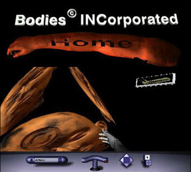

Vesna's Bodies Incorporated gave users the opportunity to create their own 3D Avatars using a customizable digital asset on the Bodies Incorporated website. The project started within another project called “Virtual Concrete” which contained a “body construction order form” asking users to supply a name, gender, and describe what their body meant to them. After many submissions were made to the hypothetical form, many users began demanding access to their “constructed body” and thus the site for Bodies Incorporated was born, giving them a way to construct and interact with their avatars. It was first featured in Speed, Bodies, Death (with Robert Nideffer), Dirty Windows Gallery, Berlin, Germany, 1996.
